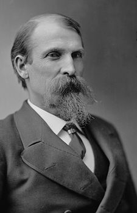
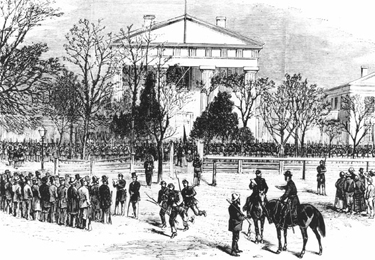

|
Arkansas was one of the states affected by Abraham Lincoln's Ten Percent
Plan. As early as July 19, 1862, after the capture of Helena, the
President appointed John S. Phelps, a Union general from Missouri,
Military Governor, but the general was unable to promote the restoration
of a loyal government and in March 1863 lost his commission.
In December 1863, Lincoln published his Proclamation of Amnesty. As
soon as 10 percent of the voters of 1860 had taken the prescribed oath,
|

Powell Clayton
|
they were authorized to form a new government. In Arkansas, this process
began in March 1864, when Isaac Murphy, the only member of the secession
convention who had refused to vote for separation, was elected
Provisional Governor. A loyal state government was set up, slavery
abolished, and Murphy elected governor. Although he gave the state an
honest administration, in 1866 he was unable to prevent the capture of
the legislature by the conservatives. All he could do in protest was to
veto the legislation they passed.
In 1867, in accordance with the Reconstruction Acts, Arkansas was
once more placed under military rule. In the following year, a newly
elected constitutional convention, including a small minority of African
Americans, met and drafted a constitution providing for universal
manhood suffrage with some Confederate disfranchisement and considerable
centralization of power in the hands of the Governor. After the
constitution was ratified in a disputed election, in June 1868, the
state was readmitted. Powell Clayton, a Union general who had settled in
Arkansas, was elected chief executive and soon became enmeshed in
questionable railroad deals. In addition, to combat the Ku Klux Klan ,
he placed parts of the state under martial law. His opponents in the
House impeached him, but the Senate dropped the charges, and when in
1871 he was elected to the federal Senate, he refused to take his seat
so that he would not have to give up his office to his antagonist,
Lieutenant Governor J. M. Johnson. Only after highly dubious
arrangements had been made for the transfer of power to O. A. Hadley, a
political ally, did Clayton accept an election to the U.S. Senate.
The Republican party in the state soon broke up into several
factions, divided by differences about the repeal of the disfranchising
clauses in the constitution. The regular Republicans, called
"minstrels," who were dominated by Clayton, supported Grant in 1872 and
nominated the scalawag Elisha Baxter for Governor. A second group, the
"brindletails," endorsed the carpetbagger Joseph Brooks. Finally, the
liberals, who backed Horace Greeley, supported Dr. Andrew Hunter. The
Democratic conservatives sought to exploit this split to their
advantage, and with their backing, Brooks maintained that he had won.
The Baxter forces, however, also claimed victory, and the dispute kept
the Republicans divided for the next two years.
In the aftermath of the election of 1872, Baxter was inaugurated
governor, though his title was disputed. In March 1873 the legislature
passed a franchise amendment repealing the disqualifying clauses of the
|

A newspaper illustration of the Brooks-Baxter
War
|
1868 constitution, a development that greatly strengthened the
Democrats. Attacked by Brooks, who sought quo warranto proceedings
against him, Baxter increasingly sought Democratic support, a policy
that alienated him from his former sponsors. His appointment of
conservatives to militia positions as well as his refusal to support
Clayton's railroad schemes led the Senator to favor Brooks, who now
secured a court decision declaring him to be Governor. The Brooks-Baxter
War of 1874 was the result, with the two claimants contending for office
with armed retainers. Although the Grant administration first favored
Brooks, it finally declared for Baxter, who thereupon secured control,
and the legislature, which the Democrats had recaptured in 1873, called
elections for a new constitutional convention. The convention met, wrote
a new constitution greatly reducing the power of the Governor, and in
effect marked the end of congressional Reconstruction.
Under the new constitution, the Democrats elected the former
Confederate Augustus H. Garland Governor. Although the President now
again sought to sustain Brooks, Garland's control was confirmed when a
congressional committee chaired by Luke Poland of Vermont reported in
favor of nonintervention.
Source: Hans Trefousse, Historical Dictionary of Reconstruction
(Westport, CT: Greenwood Press, 1991), 5-6.
|